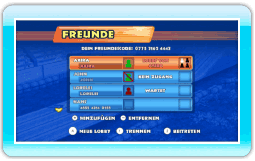
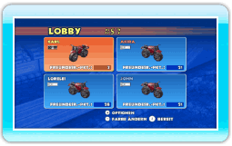
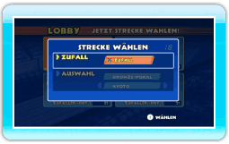
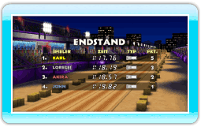

18 |
Freundesrennen |
 |
|
In Freundesrennen misst du dich über die Nintendo Wi-Fi Connection mit deinen Freunden.
Der Freunde-Bildschirm zeigt den aktuellen Status aller registrierten Freunde an (siehe unten). Um einem Rennen beizutreten, wähle die offene Lobby eines Freundes aus und drücke dann
 . Um selbst eine Lobby zu erstellen, drücke . Um selbst eine Lobby zu erstellen, drücke  und warte dann, bis Freunde dieser beitreten. und warte dann, bis Freunde dieser beitreten.
Im Lobby-Bildschirm kannst du durch Drücken von  eine Farbe für deine Maschine auswählen. Bestätige deine Wahl durch Drücken von . Willst du die Partie verlassen, dann drücke eine Farbe für deine Maschine auswählen. Bestätige deine Wahl durch Drücken von . Willst du die Partie verlassen, dann drücke  , um das Lobby-Optionsmenü aufzurufen, und wähle dort LOBBY VERLASSEN aus. , um das Lobby-Optionsmenü aufzurufen, und wähle dort LOBBY VERLASSEN aus.
Wähle aus allen freigespielten und selbst erstellten Strecken jene aus, die du fahren möchtest. Wähle ZUFALL aus, um die Strecke zufällig bestimmen zu lassen. Sobald jeder Spieler sich festgelegt hat, bestimmt der Zufallsgenerator, welche Auswahl verwendet wird.
Am Ende des Rennens erhältst du je nach Platzierung wertvolle Freundesrennen-Punkte, mit denen du viele exklusive Maschinen-Designs freispielen kannst.
|
 |
 |
 |